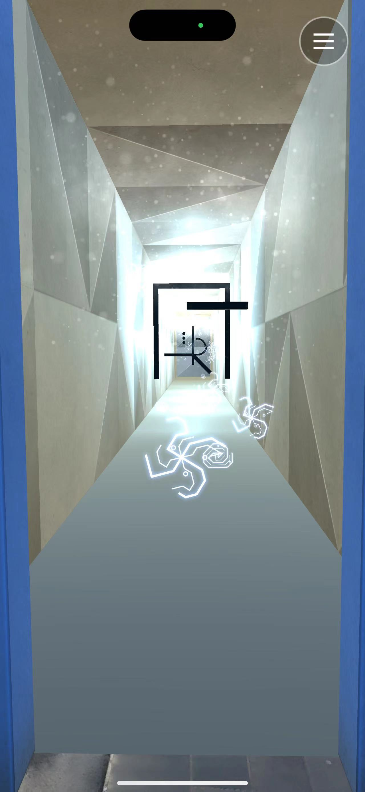
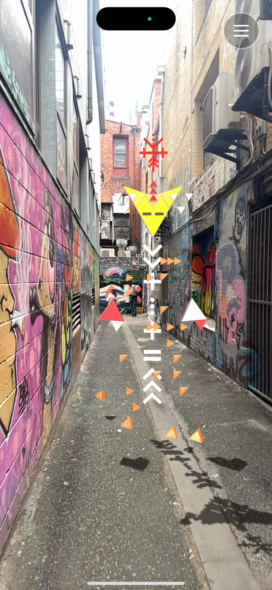
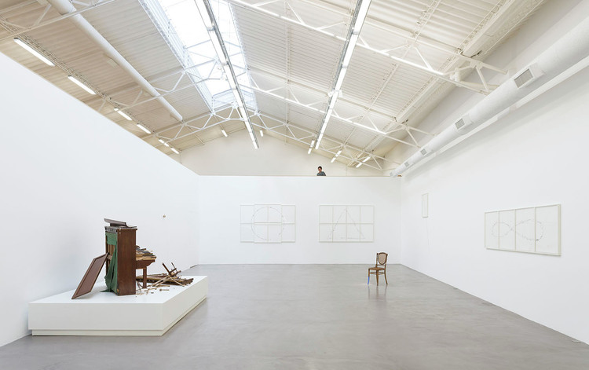
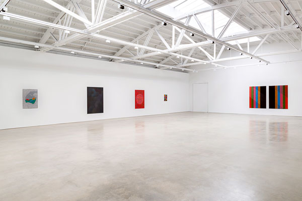

Space in Art
Pedagogical Philosophy: Understanding space can help children organize their thoughts and ideas visually, which is crucial for effective communication.




Museum Activities:
- Perspective Exploration: Educators can guide children to eexamine artworks that use perspective to create space. They can discuss how space is used to tell a story or convey a message through art.
- Space Creation Projects: Children can create their own perspective drawings or spatial installations inspired by the artworks.
Values:
Spaces develop planning and organizational skills, enabling children to communicate more structured and coherent ideas.